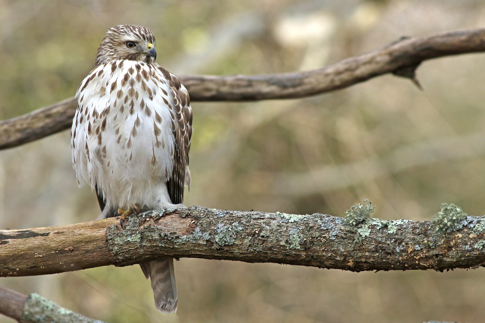

Chez les adultes, la tête est brunâtre, la poitrine roussâtre. Le ventre est pâle avec des rayures rouges. La
queue, qui possède une longueur assez analogue à celle des autres membres du genre Buteo, est ornée de fines
barres blanches. Les épaules rouges qui donnent leur nom à l'espèce sont surtout visibles lorsque l'oiseau est
perché. La buse à épaulettes présente des parties supérieures sombres qui sont agrémentées de petites taches
blanches. Les lores et les joues sont grisâtres, légèrement teintées de cannelle. Le menton et le haut de la
gorge varient du blanc au gris terne. Les iris sont bruns. L'anneau orbital, la cire et l'intérieur de la bouche
affichent différentes teintes de jaune, ce qui contraste avec le bleu-corne du bec dont la base est noire. Les
pattes et les pieds sont jaunâtres.
La femelle possède un plumage identique à celui du mâle, mais sa taille est bien plus imposante. Les juvéniles
ressemblent aux adultes, toutefois les liserés blancs et rougeâtres des plumes des parties supérieures sont plus
réduits, ce qui donne à cette partie une apparence plus uniformément sombre. La bordure des ailes est moins
châtain. Le dessous est chamois avec de nombreuses taches noisette ou noires. La queue porte des barres grises
plus nombreuses. Les tarses sont variables, du jaune verdâtre pâle au blanc.
Taille : 47 cm
Envergure : 90 à 114 cm
Poids : 500 à 700 g
Longévité : 20 ans
Ordre : Accipitriformes
Famille : Accipitridés
Genre : Buteo
Espèce : lineatus
Chez cette espèce, on a répertorié pas moins de 7 cris. Le cri le plus courant est délivré pour marquer le
territoire ou lorsque les adultes veulent donner l'alarme. Il s'agit d'une série de notes claires et
régulièrement espacées : "kee-ah" ou "kah"